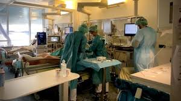

|

|
La ingeniería de tejidos es un tema interdisciplinario emergente que proporciona un nuevo enfoque para el trasplante vascular desde la perspectiva de la regeneración. Encaminando las modernizaciones de la tecnología, un equipo de científicos surcoreanos ha conseguido crear el primer vaso sanguíneo artificial, pero completamente funcional para poder ser implantado en un cuerpo. Este avance ha sido posible gracias al uso de las nuevas bioimpresoras 3D y ya se ha probado su eficacia, porque varios de estos vasos sanguíneos artificiales han sido ya injertados como aortas abdominales en seis ratones. "El vaso sanguíneo artificial es una herramienta esencial para salvar a los pacientes que padecen enfermedades cardiovasculares", ha destacado el principal investigador de este proyecto, Ge Gao, profesor de la Universidad de Ciencias Pohang de Corea del Sur.
Las ventajas de estas propuestas son se le puede brindar al paciente una mejor calidad a su cirugía o implante obteniendo más opciones de solución.
|